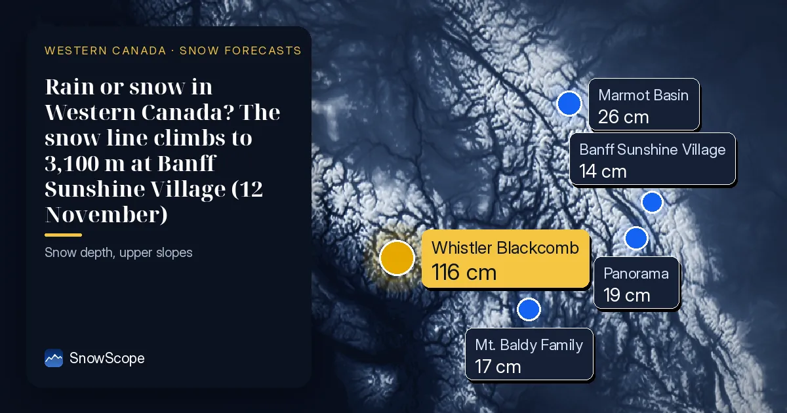

Rain or snow in Western Canada? The snow line climbs to 3,100 m at Banff Sunshine Village (12 November)
Between 1,380 m and 3,410 m: that is where our forecast puts the 0 °C level in Western Canada over the next days. In the warmest hours the snow line, about 300 m lower, rises to 3,100 m at Banff Sunshine Village on Thursday 12 November; below it, precipitation falls as rain. Every number here is an estimate with some uncertainty; the trend over several days is usually more reliable than one value.
See the live snow forecast for Banff Sunshine Village in the SnowScope appSnow depth, powder alerts and the 3D map, free.
Will rain reach the snowpack?
Rain-on-snow risk at Banff Sunshine Village: about 14 cm on the upper slopes and a snow line above mid-mountain on 12 November and 14 November; the snow would get heavy and wet, then icy as it freezes again.
Marmot Basin holds about 26 cm on its upper slopes, and on 12 November and 14 November the snow line sits above mid-mountain: rain on that snow adds water, makes it heavy and can speed up the melt, then it turns icy when it freezes.
Rain-on-snow risk at Panorama: about 19 cm on the upper slopes and a snow line above mid-mountain on 12 November and 14 November; the snow would get heavy and wet, then icy as it freezes again.
At Whistler Blackcomb (2,284 m) the forecast gives 88 mm of precipitation, the water that reaches the mountain; during the wet hours the snow line is near 1,440 m.
135 mm of precipitation is forecast at Vancouver (10 m); while it falls, the snow line sits near 1,260 m.
| Resort | Snow depth | New snow, 72 h | Coming, next days | Top |
|---|---|---|---|---|
| Banff Sunshine Village | 14 cm | 0 cm | 0 cm | 2,686 m |
| Marmot Basin | 26 cm | 2 cm | 0 cm | 2,504 m |
| Panorama | 19 cm | 2 cm | 0 cm | 2,368 m |
| Whistler Blackcomb | 116 cm | 40 cm | 83 cm | 2,259 m |
| Mt. Baldy Family | 17 cm | 3 cm | 5 cm | 2,119 m |

Rain up to the top?
On Thursday 12 November the freezing level climbs to about 3,410 m, above the top of the lifts at 2,686 m: rain can fall even at the top.
Rain on fresh snow makes it heavy and, after a cold night, icy: the days after are better for groomed runs than for powder.
At about 2,174 m, Banff Sunshine Village has 9 cm today; a normal 12 November has 29 cm there.
Only one winter in ten has more than 54 cm on this date.
A week ago the same spot had 7 cm.
In past winters the best snow at Banff Sunshine Village usually came early March / mid-March.
Rain or snow at each resort
Banff Sunshine Village (base 1,661 m, top 2,686 m): the snow line rises to about 3,100 m on 12 November, above the top, so precipitation would fall as rain or wet snow on the whole mountain and run off.
At Marmot Basin (base 1,724 m, top 2,504 m), a snow line of about 2,900 m on 13 November sits above the top: rain or wet snow on every slope if precipitation falls.
Panorama (base 1,152 m, top 2,368 m): the snow line rises to about 3,100 m on 12 November, above the top, so precipitation would fall as rain or wet snow on the whole mountain and run off.
At Whistler Blackcomb (base 653 m, top 2,259 m), a snow line of about 2,400 m on 12 November sits above the top: rain or wet snow on every slope if precipitation falls.
Mt. Baldy Family (base 1,732 m, top 2,119 m): the snow line rises to about 2,900 m on 12 November, above the top, so precipitation would fall as rain or wet snow on the whole mountain and run off.
The 0 °C level and the melt
The 0 °C level at the resorts below, from the coldest to the warmest hour of each day: Thursday 12 November: from 1,730 m to 3,410 m. Friday 13 November: from 1,480 m to 3,180 m. Saturday 14 November: from 1,380 m to 2,990 m.
How snow turns to rain below the 0 °C level
Air usually cools as you go up. Below the 0 °C level, falling snow starts to melt; melting takes energy and time, so it becomes rain only some 300 m lower: the snow line. In dry air, evaporation takes heat from the flakes and the snow line can sit even lower.
Tips for skiers
- On warm days the snow softens as it takes in heat: ski the highest lifts and north-facing slopes in the morning.
- The 0 °C level is a forecast with an error of several hundred metres: check the map again the day before you go.
- Before any off-piste or touring day, read the official avalanche bulletin (links below).
- Snow on the map does not mean a resort is open: check lifts and dates on the resort's website.
About these numbers
Resort snow depths are the deepest snow on the resort's upper slopes from the SnowScope snow model (about 1 km, run of 12 November); they are estimates for an area, not a measurement at one point. Station values are measurements on the date shown. Forecasts can change. Always read the official avalanche bulletin before going off-piste.
Official avalanche bulletins: Avalanche Canada
Cite this report
For research, teaching or the press: the numbers and charts are free to reuse under CC BY 4.0 with this citation.
SnowScope (2026), Rain or snow in Western Canada? The snow line climbs to 3,100 m at Banff Sunshine Village (12 November), https://snowscope.app/blog/en/2026/11/western-canada-freezing-level-snow-line-12-november-2026.html, accessed 2026-11-12
SnowScope (Atlas Labs). (2026, November 12). Rain or snow in Western Canada? The snow line climbs to 3,100 m at Banff Sunshine Village (12 November). SnowScope snow reports. https://snowscope.app/blog/en/2026/11/western-canada-freezing-level-snow-line-12-november-2026.html
BibTeX
@misc{snowscope2026westerncanadafreezinglev,
author = {{SnowScope (Atlas Labs)}},
title = {Rain or snow in Western Canada? The snow line climbs to 3,100 m at Banff Sunshine Village (12 November)},
year = {2026},
month = nov,
howpublished = {\url{https://snowscope.app/blog/en/2026/11/western-canada-freezing-level-snow-line-12-november-2026.html}},
note = {Published 2026-11-12 19:17 UTC; accessed 2026-11-12}
}· CC BY 4.0 · Methods, data and tools →
Banff Sunshine Village: snow and temperature by height, this winter vs last (tools) →
Follow Banff Sunshine Village
Free: a message when fresh snow is coming, and the forecast every morning.
More snow reports

Freezing level reaches 1,500 m at Banff Sunshine Village on November 19. Fresh snow fell across Western Canada in the last 72 hours, but rain threatens the new powder.

Whistler Blackcomb saw 76 cm of new snow in the last 72 hours, with Mount Cain Alpine Park also receiving 64 cm, as of November 16, 2026.

Whistler Blackcomb gained 24 cm in one week to 50 cm total; 62 cm more forecast in 72 hours as major storms hit mountains (8 November data).